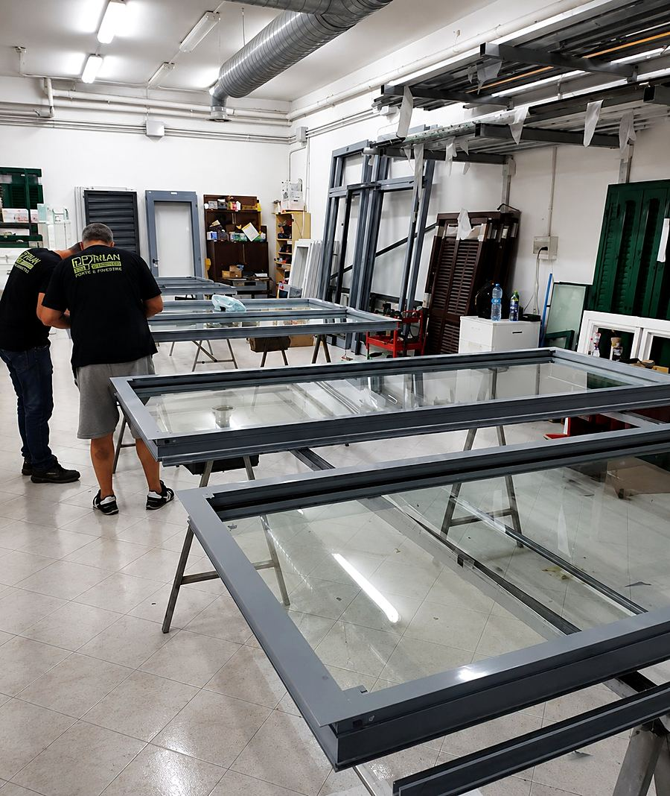

Chi siamo · Solo B2B
Una fabbrica, non un rivenditore
La nostra storia
Produciamo infissi in alluminio per chi li installa.
Cipriani è una fabbrica di infissi in alluminio a Roma Est. Lavoriamo in conto terzi per serramentisti, rivenditori e imprese: ogni telaio nasce su misura, esce squadrato e collaudato dalla nostra officina. Non vendiamo al privato — il tuo cliente resta il tuo cliente.
La fabbrica
Dalla barra al telaio finito
Taglio, lavorazione, assemblaggio e finitura sotto lo stesso tetto. Tre linee di sistemi — a freddo, a taglio termico e oscuranti — e un reparto verniciatura per le finiture su specifica.

Perché Cipriani
Cosa trovi lavorando con noi
Solo conto terzi
Lavoriamo esclusivamente con serramentisti, rivenditori e imprese. Mai vendita al dettaglio: nessuna concorrenza al tuo cliente.
Tutto su misura
Dalla barra al telaio collaudato. Gestiamo anche geometrie fuori squadra, falde inclinate e pezzi unici.
Taglio termico certificato
Sistemi fino a Uw 0,90 W/m²K e certificazione per porte su vie di esodo con la linea MA72HP.
Finitura effetto legno
Sublimazione e verniciatura su oltre trenta essenze, più cartelle RAL e marmorizzati completi.
Tempi rispettati
Rispondiamo alla distinta misure entro 24 ore lavorative e consegniamo nei tempi concordati.
Roma Est
Stabilimento in Via Prenestina 1220: vieni a vedere la produzione su appuntamento.
La fabbrica · Roma Est
Risponde direttamente chi produce.
«Mandaci la distinta misure: ti rispondiamo entro 24 ore lavorative.»
Richiedi un preventivo
Dove siamo — Roma Est, uscita Prenestina
Apri in Google Maps